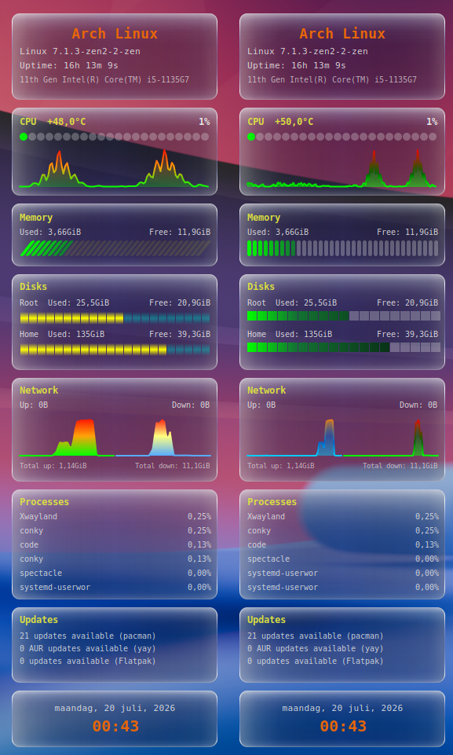

Conky widget · Lua + Cairo
conky-system-redone-v2 rebuilds the classic text-based
conky-system.conf
in Lua and Cairo. Every panel — CPU, memory, storage, network, fans,
processes, updates — is hand-drawn on a Cairo surface with a soft,
translucent finish instead of Conky's stock rendering.

01 — Style
Swap the visual style of the bars and graphs layer without touching any layout code — just a config line.
CPU load, memory %, and filesystem usage rendered as bars. Two variants, same data.
bars_module = "bars2", -- "bars" or "bars2"CPU load and network up/down history rendered as line graphs. Two variants, same data.
graphs_module = "graphs2", -- "graphs" or "graphs2"02 — Requirements
Conky with Lua + Cairo is the only hard requirement. Everything else degrades gracefully if missing.
| Tool | Used for |
|---|---|
| lsb_release | Distro name |
| pacman / checkupdates | Update count (Arch, via pacman-contrib) |
| apt | Update count (Debian/Ubuntu) |
| yay / paru | AUR update count |
| flatpak | Flatpak update count |
03 — Install
git clone https://github.com/wim66/conky-system-redone-v2.git
cd conky-system-redone-v2Open widget.lua and set network_iface to yours (find it with ip link or nmcli device).
conky -c conky.confOr use autostart.sh, which stops any running conky cleanly before relaunching — add it to your desktop environment's autostart.
04 — Configuration
Everything lives in the CFG table near the top of widget.lua — no other file needs editing for normal tweaks.
General
| Key | Default | Description |
|---|---|---|
| network_iface | "enp0s31f6" | Interface used for the Network panel. Find yours with ip -o link show. |
| bars_module | "bars2" | Which bars style to load from scripts/: "bars" or "bars2". |
| graphs_module | "graphs2" | Which graphs style to load from scripts/: "graphs" or "graphs2". |
Updates
| Key | Default | Description |
|---|---|---|
| aur_helper | "yay" | AUR helper for the extra Updates line. Set to "paru", or "" to disable AUR checking entirely. |
| show_flatpak_updates | false | Adds a Flatpak update count. Safe to leave on even without Flatpak — skipped automatically if the flatpak binary isn't found. Involves a flatpak update --appstream metadata refresh every 30 minutes. |
Panels
| Key | Default | Description |
|---|---|---|
| show_fans | false | Shows the Fans panel (RPM per fan, via scripts/getfans.lua). Set to false to hide it entirely — no empty box is left behind. |
| show_datetime | true | Shows the Date & time panel. Independent of show_fans — toggle each on/off separately. |